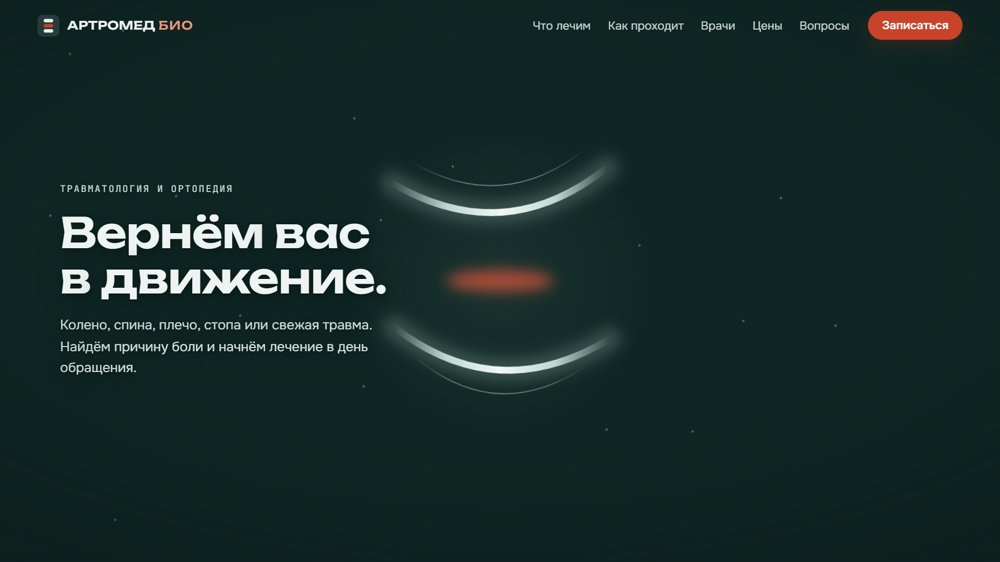
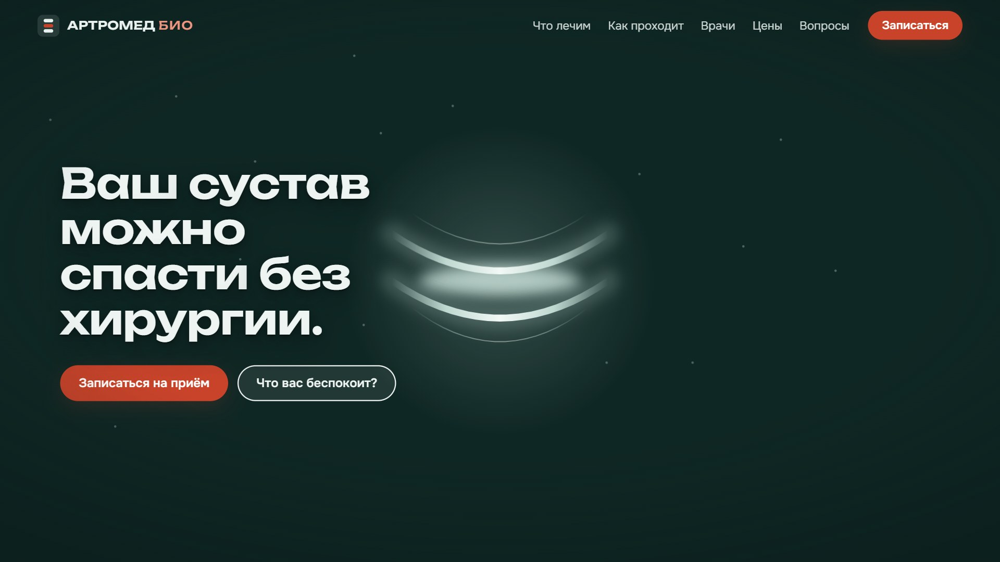
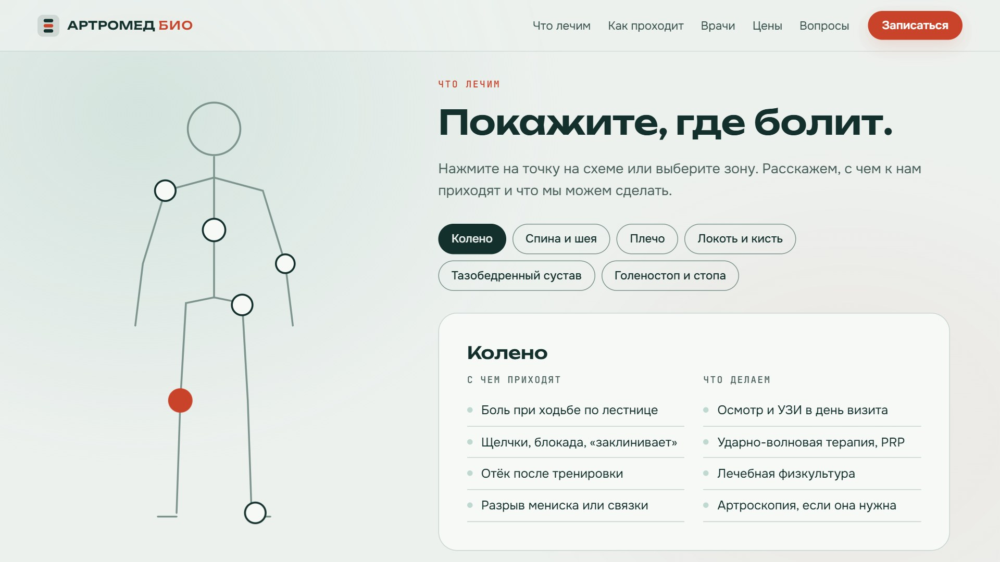

Сайт клиники, которой доверяют с первого экрана
Пациент выбирает клинику за пару минут: смотрит врачей, цены, отзывы и то, насколько понятно с ним говорят. Я делаю фирменный стиль, сайты и таплинки клиники, где всё это видно сразу: тексты написаны словами самих пациентов, а медицинские требования учтены заранее. Цены на 40% ниже средних по рынку.
Как может выглядеть сайт АРТРОМЕД БИО
Под вашу клинику уже готов черновой эскиз. Идея первого экрана: «Свет сквозь сустав». При прокрутке две светящиеся дуги, как суставные поверхности на рентгене, сходятся, а красное свечение воспаления гаснет. Тело приходит в норму прямо на глазах у пациента.



Это черновик на заглушках: финальное видео создаётся AI после того, как вы утвердите концепцию, а места для ваших врачей, цен и адреса пока пустые.
Что ищут в отзывах и на что отвечает сайт
За основу взяты отзывы пациентов травматологов и ортопедов на ПроДокторов. Повторяются одни и те же страхи и ожидания.
Неизвестность
Не знали, к кому идти и с чего начинать
На сайте: схема тела и понятные шаги лечения, от записи до восстановления.
Страх операции
Важно было обойтись без операции
На сайте: принцип «сначала причина, потом бережное лечение» и спокойные ответы на страхи в вопросах.
Врач, а не клиника
Объяснил простым и понятным языком
На сайте: врачи с фото, стажем и тем, что именно они лечат.
Деньги
Приятна честность в отношении цен
На сайте: цены на главной, с «от» и тем, что входит. У многих конкурентов их нет.
Что я учитываю на сайте клиники
Сайт медицинской организации отличается от сайта кафе: к нему есть требования закона и Минздрава. Я закладываю их в структуру сразу, чтобы потом не переделывать.
- Лицензия и реквизитыНомер лицензии, юрлицо, ИНН, ОГРН на видном месте.
- Сведения о врачахОбразование, сертификаты, стаж, специализация.
- Прайс и правила записиЦены на услуги, порядок записи и отмены, график работы.
- Информация для пациентовПрава пациента, контролирующие органы, порядок платных услуг.
- Предупреждение о противопоказанияхОбязательная фраза для рекламы медицинских услуг.
- Персональные данныеСогласие и политика по 152-ФЗ, заявки хранятся на серверах в России.
- Без обещаний излеченияТексты убедительные, но без гарантий результата.
- Проверка юристомЮридические тексты готовит ваш юрист, я их размещаю и оформляю.
Что можно заказать, простыми словами
Лендинг направления
54 000 ₽Одна страница под одно направление или акцию, например «Лечение колена без операции» или «Детский ортопед». До 12 блоков, тексты по отзывам пациентов, форма записи. Удобно запускать на неё рекламу.
Кому: клинике, которая продвигает конкретную услугу.Кинолендинг клиники с AI-видео
108 000 ₽Всё из лендинга, плюс живой первый экран: видео, созданное AI под вашу клинику, движется вместе с прокруткой. Схема «Покажите, где болит», врачи, цены, вопросы, запись. Эскиз выше сделан в этом формате.
Кому: новой клинике, которой нужно сразу выделиться и запомниться.Сайт клиники до 5 страниц
120 000 ₽Полноценный сайт с меню: главная, направления, врачи, цены, контакты и документы. Единый стиль, тексты для каждой страницы, базовая SEO-настройка: поисковики правильно понимают сайт и показывают адрес, врачей и часы работы клиники.
Кому: клинике с несколькими направлениями и командой врачей.Сайт клиники с живым первым экраном
144 000 ₽Сайт до 5 страниц плюс AI-видео на главной. Самый полный вариант: и информация, и впечатление.
Кому: клинике, которой нужен и полный сайт, и эффект «вау».Подключение онлайн-записи
от 12 000 ₽Заявки с сайта сами попадают в вашу медицинскую систему или CRM, а пациент может выбрать врача и время. Подключаю виджеты записи МИС и сервисов вроде ПроДокторов.
Тексты для медицинских страниц
9 000 ₽Только тексты: описание направления, процедуры или врача. Понятно для пациента, без обещаний излечения. В пакеты тексты уже входят.
Поддержка сайта
от 6 000 ₽ в месяцПравки и новые публикации после запуска. Три тарифа с точным числом правок в месяц, подробно в разделе «Поддержка после запуска».
Таплинк клиники
27 000 ₽Страница по ссылке в профиле клиники во ВКонтакте, Telegram или Instagram: направления, цены, врачи, адрес и кнопка записи. Пациент из соцсетей записывается в два касания. До 3 внутренних страниц, тексты входят.
Кому: клинике, которая ведёт соцсети или запускает в них рекламу.Таплинк врача
21 000 ₽Личная страница врача для его соцсетей: фото, стаж, что лечит, ответы на частые вопросы и запись именно к нему в клинику. Врач приводит своих пациентов, а клиника получает записи.
Кому: врачам, которые ведут блог или канал.Таплинки для 3 врачей
63 000 ₽Три личные страницы в едином стиле клиники. Пациент переходит от одного врача к другому и видит, что это одна команда.
Логотип клиники
18 000 ₽2–3 варианта на выбор, доработка выбранного. В векторе: чёткий и на визитке, и на вывеске. Версии для светлого и тёмного фона и маленький знак для аватарки.
Кому: клинике, которой нужен только знак.Фирменный стиль клиники
32 400 ₽3 варианта логотипа, фирменные цвета и шрифты, 5 носителей на выбор: визитка, бланк направления или заключения, бейдж врача, вывеска, оформление соцсетей. Короткий гайдлайн с правилами.
Кому: новой клинике, чтобы сайт, вывеска, документы и соцсети выглядели одной командой.Фирменный стиль «Расширенный»
50 400 ₽То же, но 5 вариантов логотипа и фирменная графика, которая узнаётся даже без логотипа: на стенах, униформе, упаковке.
Брендбук клиники
90 000 ₽Полное руководство: характер бренда, как говорить с пациентами, логотип, цвета, шрифты, правила для рекламы, печати и интерьера. Нужен, когда клиника растёт и с ней работают разные подрядчики.
Мои цены и средние цены рынка
Рыночные цены взяты из открытых прайсов студий и опытных фрилансеров на октябрь 2026, источники в конце. Моя цена на 40% ниже.
| Услуга | Рынок | Моя цена | Экономия |
|---|---|---|---|
| Сайт и запись | |||
| Лендинг направления | 90 000 ₽ | 54 000 ₽ | −36 000 |
| Кинолендинг клиники с AI-видеорынок: лендинг 140 000 + анимации 40 000, видео у студий отдельно | 180 000 ₽ | 108 000 ₽ | −72 000 |
| Сайт клиники до 5 страниц | 200 000 ₽ | 120 000 ₽ | −80 000 |
| Сайт клиники с живым первым экраномрынок: сайт 200 000 + анимации 40 000 | 240 000 ₽ | 144 000 ₽ | −96 000 |
| Подключение онлайн-записи или CRM | от 20 000 ₽ | от 12 000 ₽ | −40% |
| Тексты отдельно | 15 000 ₽ | 9 000 ₽ | −6 000 |
| Поддержка «Старт»до 5 правок в месяц | 10 000 ₽ | 6 000 ₽ | −4 000 |
| Поддержка «Стандарт»до 12 правок и 2 публикации в месяц | 12 500 ₽ | 7 500 ₽ | −5 000 |
| Поддержка «Активный»до 25 правок, 4 публикации, отчёт | 25 000 ₽ | 15 000 ₽ | −10 000 |
| Таплинки | |||
| Таплинк клиники под ключ | 45 000 ₽ | 27 000 ₽ | −18 000 |
| Таплинк врача | 35 000 ₽ | 21 000 ₽ | −14 000 |
| Таплинки для 3 врачей | 105 000 ₽ | 63 000 ₽ | −42 000 |
| Логотип и фирменный стиль | |||
| Логотип клиники | 30 000 ₽ | 18 000 ₽ | −12 000 |
| Фирменный стиль клиники | 54 000 ₽ | 32 400 ₽ | −21 600 |
| Фирменный стиль «Расширенный» | 84 000 ₽ | 50 400 ₽ | −33 600 |
| Брендбук клиникив агентствах в среднем дороже, от 600 000 | 150 000 ₽ | 90 000 ₽ | −60 000 |
Что я рекомендую АРТРОМЕД БИО
Лендинг направления
- Одно направление или акция
- Тексты по отзывам пациентов
- До 12 блоков, анимации
- Форма записи, Метрика
- Медицинские требования
Кинолендинг клиники
- Всё из лендинга направления
- AI-видео «Свет сквозь сустав»
- Схема «Покажите, где болит»
- Врачи, цены, вопросы, запись
- Версия для телефонов
Сайт клиники с живым экраном
- 5 страниц: направления, врачи, цены
- AI-видео на главной
- Тексты для всех страниц
- Базовая SEO-настройка (см. условия)
- Раздел документов для пациентов
«Старт клиники»: фирменный стиль, кинолендинг и таплинк
Логотип и фирменный стиль, сайт с AI-видео в этом стиле и таплинк клиники для соцсетей. Всё в одном проекте и в одном образе: пациент узнаёт клинику и на вывеске, и на сайте, и в соцсетях.
Логика для новой клиники: начать со «Старта клиники» или кинолендинга, чтобы быстро выйти в рекламу и собрать первые отзывы, а через несколько месяцев расширить сайт до полного. Уже сделанное при этом не выбрасывается.
Сайт живёт, когда его обновляют
Первые 14 дней после запуска мелкие правки бесплатно. Дальше на выбор три тарифа. В каждом заранее понятно, сколько правок и публикаций входит в месяц.
Для лендинга
- до 5 правок
- Проверка, что сайт и формы записи работают
- Контроль продления домена и хостинга
- Ответ в течение 2 рабочих дней
Стандарт
- до 12 правок
- 2 публикации: новый врач, акция, новость или документ для пациентов
- Еженедельная проверка сайта и формы записи
- Ответ в течение рабочего дня
Сайт как канал продаж
- до 25 правок
- 4 публикации в месяц
- Отчёт по Яндекс Метрике: сколько людей пришло на сайт и сколько записалось на приём
- Ответ в течение 2 часов в рабочее время
Что считается правкой
Одно небольшое изменение до 30 минут работы: поменять цену, телефон, часы работы, фото, абзац текста, добавить строку в прайс.
Что считается публикацией
Новый материал на готовом шаблоне: новый врач, акция, новость или документ для пациентов. Текст присылаете вы; если нужно написать с нуля, это оплачивается как тексты.
Если нужно больше
Правка сверх тарифа: 900 ₽. Публикация сверх тарифа: 1 800 ₽. Неиспользованные правки на следующий месяц не переносятся.
Крупные задачи
Новый раздел, страница, новая видеосцена или редизайн не входят в поддержку. Я оцениваю их отдельно и называю цену до начала работ.
Вы утверждаете каждый шаг до того, как он сделан
- Бриф
Анкета для основателя: направления, врачи, цены, документы. Изучаю конкурентов и отзывы пациентов.
- Концепция
Структура, тексты, цвета и идея первого экрана в одном документе. Вы утверждаете до начала работ.
- Первый кадр и видео
Сначала показываю стартовый кадр, затем готовое видео. Сайт собирается только вокруг одобренного видео.
- Сборка и проверка
Верстаю, тестирую на телефонах и компьютерах, проверяю форму записи и скорость.
- Согласование с врачами и юристом
Медицинские формулировки проверяют ваши врачи, юридические тексты ваш юрист. Два круга правок входят в цену.
- Запуск
Размещаю сайт на вашем домене, подключаю Яндекс Метрику, показываю замеры скорости.
Что входит и что оплачивается отдельно
Входит в любой пакет
- Тексты и структура
- Блоки под медицинские требования
- Адаптация под телефоны
- Форма записи с отправкой вам
- Яндекс Метрика
- Два круга правок и 14 дней мелких правок после запуска
Оплачивается отдельно
- Домен: 200–500 ₽ в год
- Хостинг в России: от 200 ₽ в месяц
- Фотосъёмка врачей и интерьера, если нужна
- Юридические тексты от вашего юриста
- Реклама и SEO-продвижение в топ поиска
Базовая SEO-настройка: что делаю
- Заголовок и описание каждой страницы для Яндекса и Google
- Правильная структура заголовков и подписи к картинкам
- Карта сайта и инструкции для поисковиков (sitemap.xml, robots.txt)
- Разметка «это медицинская клиника»: адрес, телефон, часы работы, врачи
- Тексты под реальные запросы пациентов
- Быстрая загрузка и удобство на телефоне
- Файлы для подключения Яндекс Вебмастера и Google Search Console
Что нужно от вас
- Подтвердить сайт в Яндекс Вебмастере и Google Search Console, я подскажу, куда нажать
- Завести или обновить карточку в Яндекс Бизнесе и 2ГИС: для местного бизнеса это часто даёт больше обращений, чем сам сайт
Не входит: продвижение в топ поиска и регулярная работа над позициями. Это отдельная ежемесячная услуга, и честный подрядчик не гарантирует конкретное место в выдаче.
Оплата в два этапа
Обсудим цели АРТРОМЕД БИО за 20 минут
Лендинги и допуслуги: Granula Studio, тарифы 2026; SOTA Marketing.
Сайты, поддержка, хостинг: Smirnov Marketing, цены 2026; Workspace.ru.
Таплинки: AYREADY, тарифы на дизайн Taplink. Фирменный стиль и брендбук: 1PS; Kaoma; Точка; Brand Hub, исследование АБКР.
Тарифы поддержки: ABETA, цены 2026; Team-B; OpenStart.
Отзывы пациентов: ПроДокторов, отзывы о травматологах и ортопедах Москвы, 2025–2026.